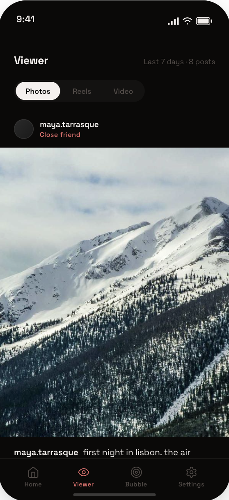
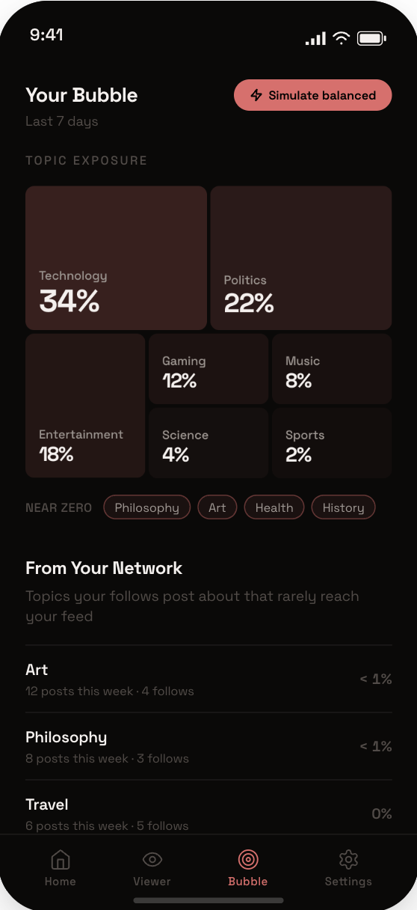
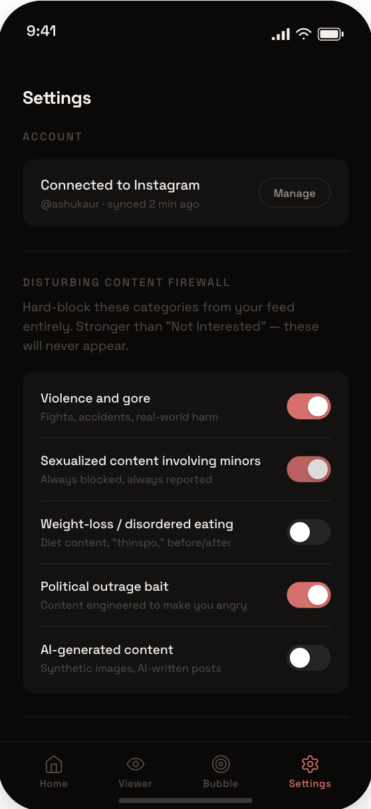

Speculative Product Design · 2026
Escaping the Algorithm
A speculative mobile app built around a simple question: what is Instagram's algorithm actually doing to your feed? It surfaces the ranking signals Meta hides and gives users a chronological feed of only the people they follow.
Every screen in this app is an argument. Not a feature pitch, an argument against a specific thing the platform has chosen to do and refuses to explain.
From research to working prototype, built solo with Claude Code.
A note on feasibility
Why This Is Speculative
This app can't actually be built. Meta's API doesn't expose the signals it would need: follow-graph activity, DM frequency, like history, per-post ranking rationale.
That's not a problem with the project. That's the project. If Meta opened these signals tomorrow, the prototype would be buildable overnight. They won't.
Research
The Grievance
Before designing anything, I spent time finding out what people were actually angry about. Not think pieces. Not UX papers. What real users were saying, in their own words, in 2025.
Four research passes:
- App Store reviews. ~45 sampled. Feeds dominated by accounts they never followed. Controls like "Not Interested" that do nothing. Disturbing content slipping through even with sensitivity settings maxed out.
- Reddit. Threads across r/Instagram, r/digitalminimalism, r/Anticonsumption. The dominant theme wasn't curiosity about the algorithm. It was grief. "It's not Instagram anymore." "Where are my friends?"
- Reach suppression. In 2024, Meta quietly stopped recommending political content to non-followers. Accounts posting about activism, reproductive rights, and climate saw up to 65% less reach. The people who followed those accounts had no idea their posts were being hidden.
- Filterworld by Kyle Chayka. Backing for a quieter complaint: feed convergence. Everyone's feed is starting to look the same.
Users are mourning a product that no longer exists. I built a viewer that gives back the parts of old Instagram that are still technically deliverable.
Design philosophy
The Thesis
I needed a rule to decide what belongs in this app and what doesn't.
Everything in this app must either diagnose or escape the algorithm. Nothing that negotiates with it.
What got cut:
- Algorithm Preferences and feed-tuning sliders. Controls that let users nudge what they see. Cut. This assumes the system is fair and the user just needs to ask better. The research says otherwise.
- Action Audit. A screen that let users tune Instagram's controls more precisely. Cut. Receipts replaced it. Receipts doesn't ask the platform to improve, it keeps score. Receipts witnesses. Action Audit would have nudged.
What survived does one of two things. Tells you what's happening to your feed (Home, Bubble), or lets you leave (Viewer, Settings firewall).
The prototype
The Screens
Five screens. Each one answers a grievance.
Home — "What the algorithm did to your feed today"
Top number: how many of today's 50 posts came from people you actually follow. Below that, a button to switch to the clean feed. Below that, Receipts. At the bottom, the breakdown: Followed, Suggested, Sponsored, AI-Generated.

Viewer — "Old Instagram, restored"
Chronological. Only people you follow. No ads, no suggested, no algorithmic insertions. Each post has a small label under the username (Close friend, Mutual, Loose follow) which explains the ordering and reframes the screen as a diagnostic view, not a feed clone. The feed has a defined ending. "That's everything from your follows in the last 7 days. You're all caught up."
These posts exist. The platform just chooses not to show them this way.

Bubble — "What's missing from your feed"
A topic treemap of what dominates your feed, paired with a "From Your Network" section: topics your follows post about that rarely reach you. Politics, Activism, Travel, Health, History, with post counts.
"Filter bubble" language usually blames the user. You got what you asked for. This screen shows the opposite: even the people you explicitly followed are being filtered. When Meta suppressed political content for a year, users had no way to know. Bubble would have shown them. The algorithm decides what you see based on your activity. But it also hides posts from people you follow, for reasons it never explains.

Post Inspector — "Why am I seeing this?"
Tap any post in the Viewer. A drawer opens with the ranking signals: posted by a close friend (45%), DM frequency (30%), recent likes on similar posts (18%), geo-tag matching a recent search (7%).
Every recommendation engine works on signals like these. Almost no consumer product shows them.

Settings — "Hard controls the platform won't give you"
Two sections. The first is a Disturbing Content Firewall. Five categories, each a hard toggle. Child safety content is permanently blocked, not a toggle, not a preference. The other four are the ones Instagram's controls consistently fail to suppress.
The second is Feed Controls. Four toggles: Suggested posts, Sponsored posts, AI-generated posts, Reels from non-follows. Off means gone. Not deprioritized, not "shown less often." Gone. The user decides what enters their feed, not the algorithm.

Accountability
Receipts
Instagram gives you controls. "Not Interested." Mute. Content preferences. But after you set them, there's no feedback. No log. No proof they worked. You tap "Not Interested" on weight-loss content, and similar posts keep showing up a week later.
Receipts is an accountability tracker that sits on the Home screen. It keeps a record of every control you've set and tells you whether it was honored:
- 12 accounts hidden this week · 11 stayed hidden · 1 reappeared after 3 days
- "Weight loss" muted · 47 posts blocked, 3 slipped through
- Close friend priority · honored in 94% of sessions
When something fails, a coral banner flips on: "1 control wasn't honored this week."
Two decisions made this work. It lives on Home, not buried in a separate tab. And the failure case is the loudest part. The app tells you when something went wrong, which is exactly what Instagram doesn't do.
Honest about scope
What I'd Build Next
Things I sketched but didn't ship:
- Rewind. Reconstructing a user's feed from a chosen week in the past, using their Instagram data export. Good idea, wrong scope for this version.
- A detail view for Receipts. A granular log of every blocked post, every honored control. Designed in outline, not built.
- A real backend. The app needs access to Meta APIs that no third party will ever get. The screens stay speculative until that changes.
The hardest part of this project wasn't the screens. It was cutting. Every interesting feature had to pass the same test: diagnose or negotiate? Most of them negotiated. Most got cut.
Until the platform decides accountability is something it owes its users, these screens are the receipt.